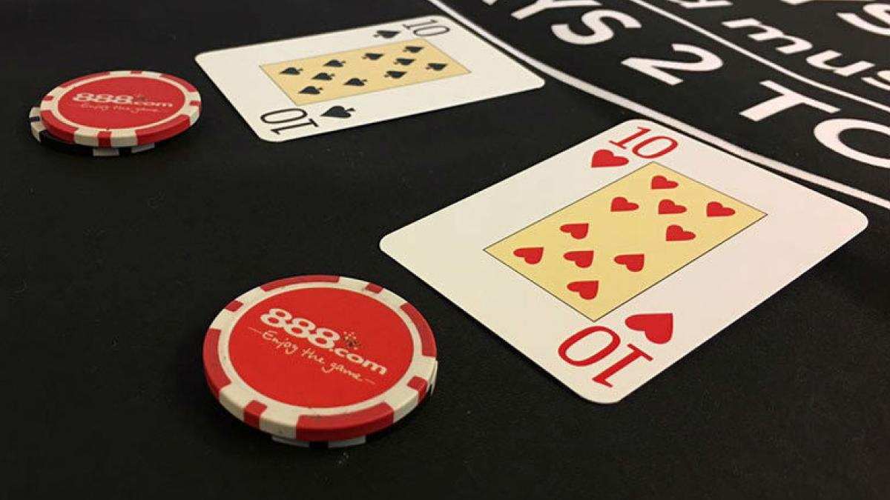

Reglas Básicas del Blackjack
El blackjack es un juego de cartas que se juega entre el jugador y el crupier. Aquí están algunas de las reglas más básicas:
- El objetivo es vencer al crupier sin pasar de 21.
- Las cartas numéricas valen su valor nominal, las cartas de figuras valen 10 y los ases pueden valer 1 u 11, dependiendo de lo que sea más beneficioso.
- Se reparten dos cartas al jugador y dos al crupier, con una de las cartas del crupier boca arriba.
- El jugador puede pedir más cartas (hit) para acercarse a 21 o quedarse con lo que tiene (stand).
- Si el jugador supera 21, pierde automáticamente (busto).
- El crupier debe seguir reglas específicas para determinar si pide más cartas o no.
¿Quieres recibir más información?
Complete el siguiente formulario para recibir actualizaciones por correo electrónico:

Imagen 1
Un AS y un Rey.

Imagen 2
Un AS y un sirviente.

Imagen 3
Par de 10s donde los divides, algo que nunca deberías hacer en blackjack y si lo haces toda la mesa te va a odiar.